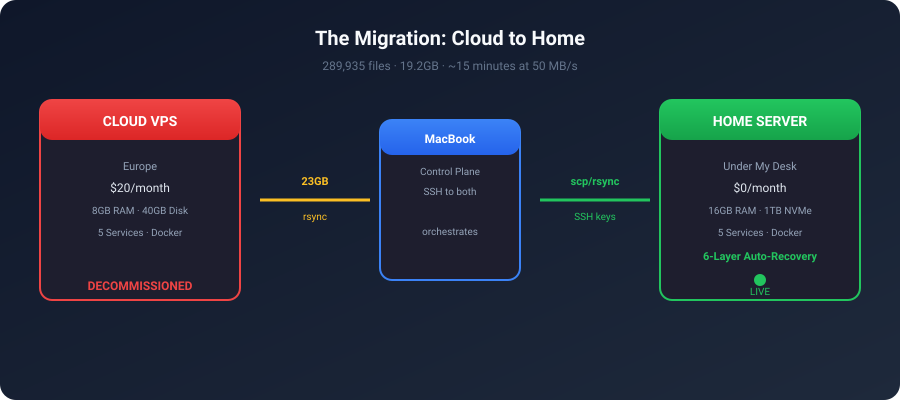
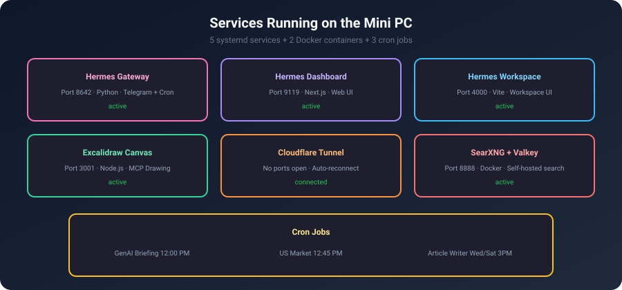
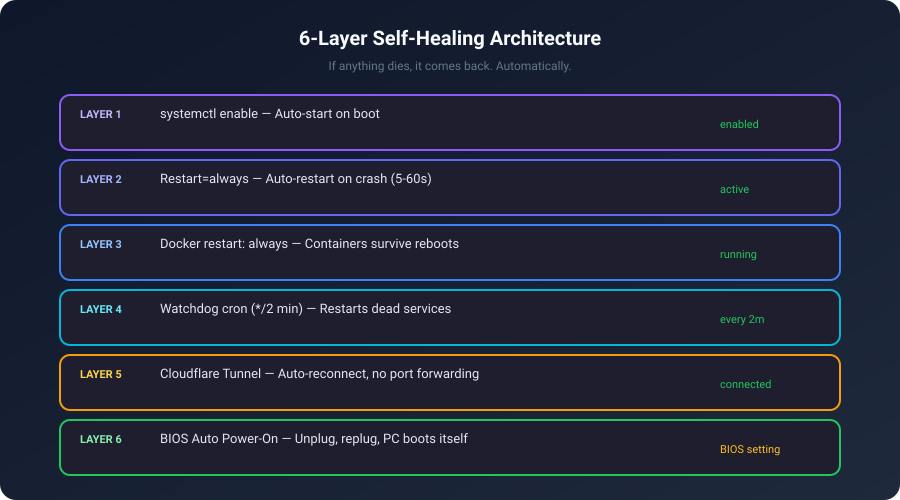

I Fired My Cloud Server and Moved My AI Agent to a Mini PC Under My Desk
A step-by-step journey: dual-booting Linux Mint with Windows, migrating 23GB of AI agent data, and building a self-healing home server that costs $0/month.

I had a problem.
My AI agent Hermes — a Python-based assistant that runs my Telegram bots, sends me daily GenAI briefings, tracks the stock market, manages my web dashboard, and handles
a dozen other automated tasks — was living on a a cloud provider VPS in Europe for $20/month.
Every morning at 12:00 PM, Hermes wakes up and scans 10+ RSS feeds, crawls X/Twitter for announcements from AnthropicAI, OpenAI, GoogleAI, MetaAI, MistralAI, checks Reddit, reads official blogs, and compiles a comprehensive GenAI Daily Briefing — then delivers it to my Telegram. At 12:45 PM, it does the same for the US stock market.
All running on someone else's machine. In another country. That I was paying for.
I had a Mini PC sitting on my desk — AMD Ryzen 5 7640HS, 16GB DDR5, 1TB NVMe. Tiny. Silent. 15 watts at idle.
It was time to move home.
Chapter 1: Dual-Booting Linux Mint with Windows
The MinisForum came with Windows 11. I wanted to keep Windows but also run Linux for the server.
Shrinking the Windows Partition
Booted into Windows, opened Disk Management, right-clicked C:, and shrank it by 200GB. That gave me unallocated space for Linux.
Creating the Bootable USB
On my MacBook, I downloaded Linux Mint 22 Cinnamon ISO and used BalenaEtcher to flash it onto a USB drive.
The Install
Plugged the USB in, pressed F11 for boot menu, selected the USB. Mint's live desktop appeared. Clicked "Install Linux Mint".
Chose "Something else" for manual partitioning. Created a 492GB ext4 partition at /. Kept the existing EFI partition. Hit Install.
The First Problem — No Internet
Mint installed beautifully. Then I opened Firefox.
No internet.
Plugged in ethernet. Nothing. Ran ip link — only loopback and a Docker bridge. No ethernet interface at all.
The Mini PC uses a Realtek RTL8125 2.5GbE chip. The kernel's r8169 driver doesn't support it. The proprietary r8125 driver wasn't included.
I tried everything:
sudo modprobe r8169— didn't work- iPhone USB tethering — couldn't get it working
- Downloading the driver on Mac and transferring via USB — chicken-and-egg (needed build tools, needed internet for build tools)
linux-firmware which has the RTL8125 firmware blob. On the fresh install, ethernet came up immediately.
If you're buying a mini PC for a Linux home server, check the ethernet chipset. Realtek RTL8125 is notorious. Ubuntu 24.04+ and Mint 22+ include the firmware.
Chapter 2: The Migration — 23GB from Europe to My Desk
Three machines involved:
a cloud provider VPS (your-vps-ip) ← Source (Europe)
↕ (internet)
MacBook ← Control plane
↕ (local network)
MinisForum PC (192.168.x.x) ← Destination (under my desk)The VPS and PC couldn't talk directly. But my MacBook could reach both.
Prepare the PC
sudo apt update && sudo apt install -y \
openssh-server curl git python3 python3-venv python3-pip \
docker.io docker-compose rsync jq sqlite3 htop tmuxCreated a hermes user with passwordless sudo and docker group access.
The SSH Key Nightmare
I copied my Mac's SSH key to the PC using sudo tee. The command said it succeeded. The file existed. But SSH to the VPS gave Permission denied.
After an hour of debugging, I discovered the key file was 0 bytes. The sudo tee over SSH had silently failed.
sudo tee over SSH for key files. Use scp or generate fresh keys on the destination machine.
I generated a fresh keypair on the PC and added its public key to the VPS from my Mac. 2 seconds vs 1 hour of debugging.
The Big Rsync
nohup rsync -avz --progress \
--exclude=".lmstudio/" \
--exclude="*.lock" --exclude="*.pid" \
-e "ssh -o StrictHostKeyChecking=no" \
hermes@your-vps-ip:/home/hermes/ \
/home/hermes/ \
> /tmp/hermes_rsync.log 2>&1 &23GB. 500,000+ files. Running at ~50 MB/s. The worst part was node_modules — hundreds of thousands of tiny files.
Result: 289,935 files transferred. 19.2GB total. Sessions. Memories. Skills. The 580MB state database with 2,400+ conversation histories. All of it.
Chapter 3: Making It Run
Node.js Version Trap
First crash:
You are using Node.js 18.19.1. Vite requires Node.js version 20.19+ or 22.12+.Mint ships Node 18. Hermes Workspace uses Vite which needs 20+.
curl -fsSL https://deb.nodesource.com/setup_22.x | sudo bash -
sudo apt install -y nodejsDocker Compose v1 vs v2
VPS used docker compose (v2 plugin). Mint had docker-compose (v1). SearXNG compose file used v2 syntax. Fixed by adding version: "3.8" and removing the name: field.
The Port Mismatch
Hermes config expected SearXNG on port 8888. Docker mapped it to 8080. Web search was silently broken.
The Telegram Polling War
After starting everything, logs showed:
WARNING: Telegram polling conflict. Error: Conflict: terminated by other
getUpdates request; make sure that only one bot instance is runningThe VPS gateway was still running — disabled but not killed. Two machines fighting for one Telegram bot token.
ssh hermes@your-vps-ip "sudo kill -9 $(pgrep -f hermes_cli)"Silence. The PC was now the only one talking to Telegram.
Chapter 4: The Cron Jobs That Make It Worth It

Here's what runs every day without me lifting a finger:
Daily GenAI Briefing (12:00 PM)
Hermes becomes a research journalist:
- RSS Feeds: TechCrunch AI, Anthropic, OpenAI, Google AI, HuggingFace, The Verge, Ars Technica, Decrypt, VentureBeat, AI News
- X/Twitter: @AnthropicAI, @OpenAI, @GoogleAI, @GoogleDeepMind, @MetaAI, @MistralAI, @karpathy
- Official Blogs: Anthropic, OpenAI, Meta AI
- Reddit: r/MachineLearning, r/LocalLLaMA, r/artificial
- Catch-all: "AI news today", "AI startup funding"
Compiles into: Top Stories, Model Releases, Tools & Frameworks, Industry Moves, Community Highlights, Quick Links. Delivered to Telegram. 46 successful runs so far.
US Stock Market Briefing (12:45 PM)
Fetches Yahoo Finance data: Major Indices, Sector Performance, Top Gainers/Losers, Commodities, Treasury Yields, Outlook. Also 46 successful runs.
GenAI Article Writer (Wed & Sat, 3 PM)
Researches trending topics, writes a full Medium article with Gemini-generated images, pushes to my GitHub Pages blog, and gives me a LinkedIn post ready to paste. 10 articles published so far.
Chapter 5: Making It Bulletproof

A home server is useless if it dies every time the power flickers. Six layers of auto-recovery:
Layer 1: Systemd Auto-Start
All 5 services are enabled — start automatically on boot.
Layer 2: Auto-Restart on Crash
Every service has Restart=always with RestartSec=5-60s. Die, come back in seconds.
Layer 3: Docker Restart Policy
services:
searxng:
restart: alwaysLayer 4: Watchdog Cron (Every 2 Minutes)
#!/bin/bash
SERVICES="hermes-gateway hermes-dashboard hermes-workspace
excalidraw-canvas cloudflared-tunnel"
for svc in $SERVICES; do
if ! systemctl is-active --quiet "$svc"; then
systemctl restart "$svc"
fi
doneLayer 5: Cloudflare Tunnel Auto-Reconnect
No port forwarding. No static IP. No DDNS. Credential-based auth, reconnects automatically.
Layer 6: BIOS Auto Power-On
Del during boot → Advanced → Power Management → "Restore on AC Power Loss" → "Power On". Unplug, replug, PC turns itself on and everything starts.
The Final Result
- Monthly cost: $20 → $0
- RAM: 8GB → 16GB DDR5
- Disk: 40GB → 492GB NVMe
- Latency: 120ms (Europe) → <1ms (my desk)
- Data location: Someone else's server → Under my desk
- Power bill impact: ~$1.50/month at 15W idle
What I'd Do Differently
- Check the ethernet chipset before buying. RTL8125 works on modern distros but cost me 2 hours.
- Don't dual-boot a server. Dedicate the whole machine to Linux. Windows is for gaming, Linux is for serving — pick one per machine.
- Generate fresh SSH keys. Don't copy them over SSH. 2 seconds vs 1 hour.
- Install Node.js 22 from the start. Skip the distro's outdated version.
- Verify ports match your config. SearXNG 8080 vs 8888 was a silent failure.
Is This Worth It?
Absolutely. $20/month saved. 4x more RAM. 12x more disk. Sub-millisecond latency. My data lives in my apartment. And it heals itself.
The setup took about 5-6 hours. But now it's done. Forever.
If you're running a personal project on a VPS just because "that's how it's done" — stop. Look under your desk.
Self-Hosting Home Server AI Agent Linux Mini PC Hermes Migration Edge Computing